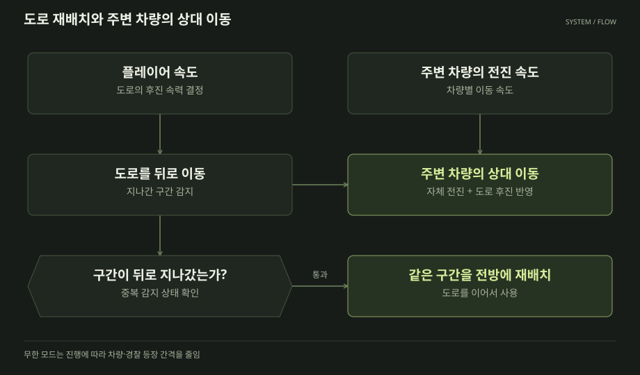
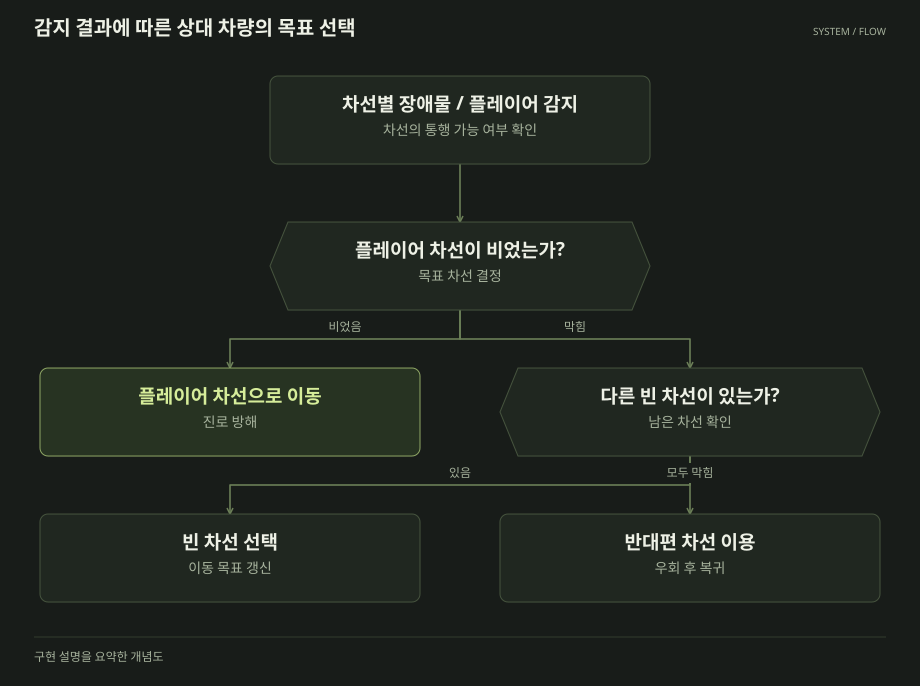
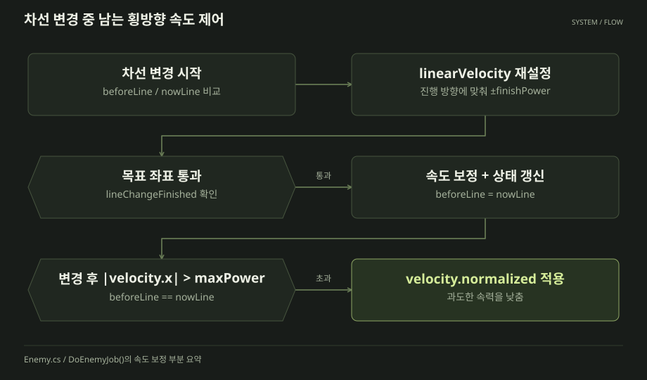
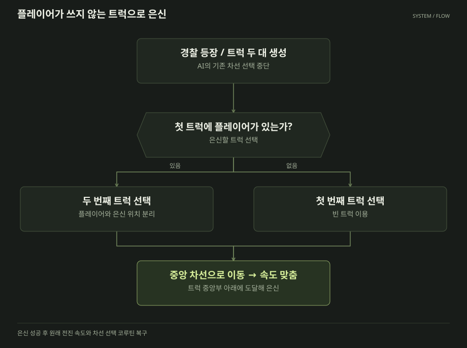
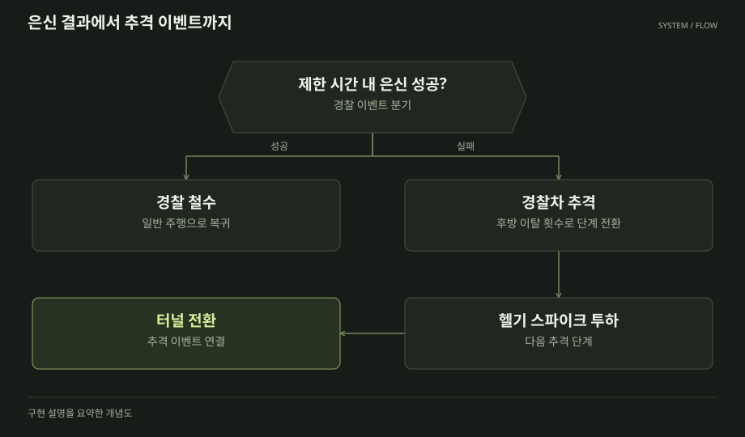

GOAL / IMPLEMENTATION
개발 목표와 구현 범위
원작의 변속, 차선 경쟁, 경찰 추격을 Unity로 재현했습니다. Rigidbody 주행과 차량 AI를 구현하고 일반 레이스와 무한 모드의 진행을 구성했습니다.
구현 범위
주행과 변속 / 상대 차량 AI / 경찰 추격 이벤트 / 게임 진행
PROBLEM / SOLUTION
문제와 해결
차선을 오갈수록 커지던 차량의 흔들림
- 문제
- 목표 차선을 지나도 횡방향 속도가 남아 반대 방향으로 힘을 줄 때마다 흔들림이 커지고, 도로 밖으로 벗어났습니다.
- 해결
- 목표 통과 시 횡방향 속도를 보정하고 과도한 속력을 줄여 차선 주변의 움직임을 유지했습니다.
구현 과정 자세히 보기 ↓
01 / DRIVING SYSTEM
도로 반복과 상대 속도
도로와 주변 차량의 움직임으로 전진감과 속도 차이를 표현했습니다.
1-1지나간 도로를 재배치하는 주행 구조
장시간 주행과 무한 모드를 고려해 도로를 뒤로 이동시키고 지나간 구간을 전방에 재배치했습니다. 같은 도로가 중복 이동하지 않도록 감지 상태를 기록했습니다.
주변 차량에는 자신의 전진 속도와 도로의 후진 속력을 함께 반영해 플레이어와의 속도 차이를 표현했습니다. 무한 모드는 진행에 따라 차량과 경찰의 등장 간격을 줄였습니다.

크게 보기 ↗
↳도로 재배치와 주변 차량의 상대 이동
</>관련 코드 펼치기+
Road.cs
C#
플레이어의 속도와 배율을 읽어 도로를 뒤로 이동시킵니다. 이 이동으로 플레이어가 앞으로 달리는 상대적인 움직임을 표현합니다.
void FixedUpdate()
{
roadSpeedFactor = Player.Instance.GetSpeedFactor();
float roadSpeed = Player.Instance.GetSpeed() * roadSpeedFactor;
transform.position += Vector3.back * roadSpeed * Time.deltaTime;
}
02 / GEAR / ACCELERATION
RPM과 기어별 가속
변속 순간의 속도는 유지하고, 새 기어에 맞는 RPM으로 가속을 이어갔습니다.
2-1차량별 설정과 변속 처리
기어별 최고 속도와 RPM 증가 계수를 나누어 도달 속도와 가속감을 조정했습니다. 차량별 설정은 PlayerCarInfo에 보관하고 선택한 차량에 적용했습니다.
변속 시 직전 속도는 유지하고 새 기어에 맞춰 RPM을 다시 계산했습니다. 기어를 올리면 낮아진 RPM에서 가속을 이어가며, 계수는 직접 플레이하면서 조정했습니다.
↳서로 다른 기어에서의 RPM·속도 변화
</>관련 코드 펼치기+
Player.cs
C#
가속 입력이 있고 조작 가능한 상태에서 기어별 계수로 RPM을 올립니다. 현재 기어의 최고 속도와 RPM 비율로 속도를 계산하고, 최대 RPM에 도달하면 상한을 적용합니다.
if (forward && !crash && movable)
{
if (RPM < maxRPM)
{
RPM += rpmAcceleration * gearRatios[currentGear - 1];
speed = maxSpeeds[currentGear - 1] * (RPM / maxRPM);
if (RPM > 9)
{
RPM = 9;
speed = maxSpeeds[currentGear - 1];
}
}
}
Player.cs
C#
기어를 올리기 직전의 속도를 보관한 뒤, 새 기어의 최고 속도를 기준으로 RPM을 역산합니다. 속도를 유지한 채 낮아진 RPM에서 다음 가속을 이어갑니다.
if (currentGear < 5)
{
float lastSpeed = speed;
currentGear += 1;
RPM = maxRPM * (lastSpeed / maxSpeeds[currentGear - 1]);
AudioManager.Instance.SwitchGearSFX();
}
03 / VEHICLE AI
상대 차량의 차선 선택과 좌우 주행
장애물 회피와 플레이어 방해를 연결하고, 목표 차선 주변의 움직임을 보정했습니다.
3-1차선별 감지와 이동 목표 선택
차선별로 장애물과 플레이어를 감지했습니다. 길이 비면 플레이어 차선으로 진로를 방해하고, 막히면 다른 차선을 선택했습니다. 모두 막힌 경우에는 반대편 차선을 이용한 뒤 복귀합니다.
목표 차선 좌우로 힘을 가해 차선 주변을 오가며 달리는 움직임을 만들었습니다. 차체는 트리거로 두고 플레이어와 접촉할 때의 감속과 피해를 별도로 처리했습니다.

크게 보기 ↗
↳감지 결과에 따른 상대 차량의 목표 선택
</>관련 코드 펼치기+
Enemy.cs
C#
세 차선 모두 일반 차량이 없는 상위 조건을 통과하면 플레이어 감지 결과로 목표 차선을 고릅니다. 아래는 첫 번째 차선의 예시이며, 목표 변경 시 이동 시작·완료 플래그를 함께 초기화합니다.
if (nowLine != 1 && playerCarDetectors[0].isCarOn())
{
beforeLine = nowLine;
nowLine = 1;
lineChangeFinished = false;
lineChangeStarted = false;
}
3-2목표 차선 부근에서 커지는 흔들림 수정
목표 차선 좌우로 힘을 가해 흔들며 달리는 모습을 만들었지만, 목표를 통과한 뒤에도 횡방향 속도가 남았습니다. 반대 방향으로 힘을 줘도 다시 목표를 지나치면서 흔들림이 커져 도로를 벗어나는 경우가 있었습니다.
차선 변경 시작과 목표 좌표 통과 시 횡방향 속도를 직접 보정했습니다. 변경 후 속도가 maxPower를 넘으면 속도 벡터를 정규화해 속력을 낮췄습니다. 과도하게 멀어지는 움직임을 줄이면서 목표 차선 주변을 오가는 느낌은 유지했습니다.
↳차선 변경 시 횡방향 속도 보정 전후 비교

크게 보기 ↗
↳Enemy.DoEnemyJob()에서 차선 변경 시작과 목표 좌표 통과 시 속도를 보정하고, 변경 후 과도한 속도를 낮춰 목표 차선 주변의 움직임을 유지합니다.
</>관련 코드 펼치기+
Enemy.cs
C#
목표 차선을 통과하면 횡방향 속도와 차선 변경 상태를 함께 갱신합니다. 이후 x축 속도가 maxPower를 넘으면 속도 벡터를 정규화합니다.
if (beforeLine <= nowLine && transform.localPosition.x >= linePosition[nowLine] && !lineChangeFinished)
{
rigid.linearVelocity = new Vector3(finishPower, 0f, 0f);
lineChangeFinished = true;
beforeLine = nowLine;
}
else if (beforeLine >= nowLine && transform.localPosition.x <= linePosition[nowLine] && !lineChangeFinished)
{
rigid.linearVelocity = new Vector3(-finishPower, 0f, 0f);
lineChangeFinished = true;
beforeLine = nowLine;
}
if (beforeLine == nowLine && Mathf.Abs(rigid.linearVelocity.x) > maxPower)
{
rigid.linearVelocity = rigid.linearVelocity.normalized;
}
04 / EVENT FLOW
트럭 은신과 경찰 추격
플레이어와 상대 AI가 함께 단속을 피하고, 결과에 따라 추격 단계가 달라지도록 했습니다.
4-1일반 주행에서 트럭 은신으로 전환
경찰이 등장하면 플레이어와 상대 AI가 함께 단속을 피하도록 트럭 두 대를 생성했습니다. 첫 트럭에 플레이어가 있으면 AI는 두 번째 트럭을 선택하고, 그렇지 않으면 첫 트럭을 이용합니다.
AI는 기존 차선 선택 코루틴을 중단하고 중앙 차선으로 이동합니다. 선택한 트럭 중앙부에 도달하면 전진 속도를 맞춰 밑으로 들어가며, 은신 성공 후에는 원래 속도와 차선 선택을 복구했습니다. 일반 주행과 은신의 전환을 이 흐름으로 연결했습니다.

크게 보기 ↗
↳플레이어가 쓰지 않는 트럭으로 은신
</>관련 코드 펼치기+
Enemy.cs
C#
경찰 수색 중 트럭을 감지하면 중앙 차선을 목표로 잡습니다. 첫 트럭의 플레이어 탑승 여부로 사용할 트럭을 고른 뒤 은신·경찰 상태 확인 코루틴으로 전환하고 기존 차선 선택을 종료합니다.
beforeLine = nowLine;
nowLine = 2;
lineChangeFinished = false;
lineChangeStarted = false;
if (CarGenerator.Instance.policeTrucks[0].GetComponent<Truck>().GetOnPlayer())
selectedTruck = 1;
else
selectedTruck = 0;
StartCoroutine(TruckHiding());
StartCoroutine(CheckingPolice());
yield break;
4-2은신 결과와 추격 단계 연결
제한 시간 내 은신에 성공하면 경찰이 물러나고, 실패하면 경찰차 추격 → 헬기 스파이크 투하 → 터널로 이어지도록 구성했습니다. 경찰차의 후방 이탈 횟수로 추격 단계를 전환하고 기존 차량 AI의 이동 코드를 재사용했습니다.

크게 보기 ↗
↳은신 결과에서 추격 이벤트까지
</>관련 코드 펼치기+
Enemy.cs
C#
경찰차가 후방으로 이탈할 때 호출되는 횟수를 누적합니다. 네 번째에는 일반 차량 생성을 중단하고, 다섯 번째에는 헬기의 스파이크 투하를 시작하며 경찰차 추격을 종료합니다.
private void CheckPoliceCount()
{
policeCount += 1;
UIController.Instance.IncreaseStars(policeCount - 1);
if (policeCount == 4)
{
CarGenerator.Instance.createCar = false;
}
else if (policeCount == 5)
{
CarGenerator.Instance.StartGenerateSpikes();
AudioManager.Instance.StopSiren();
Destroy(transform.parent.gameObject);
}
}
05 / AI / MOVEMENT LOGIC
AI 활용
경찰 추격 장면에 필요한 헬기 움직임을 구현할 때 ChatGPT의 도움을 받았습니다.
5-1ChatGPT를 활용한 헬기 이동 구현
헬기의 이동 수식과 보간 구현에 ChatGPT의 도움을 받았습니다. 2차 베지어 곡선과 EaseOutCubic으로 진입하고, 사인 함수와 회전 보간으로 호버링을 표현해 경찰 추격 이벤트에 연결했습니다.
↳곡선 진입 후 호버링으로 이어지는 경찰 헬기
</>관련 코드 펼치기+
Heli.cs
C#
비행 시간을 0~1로 정규화한 뒤 EaseOutCubic으로 도착 직전 속도를 줄입니다. 이 값을 시작·제어·도착점의 2차 베지어 보간에 넣어 진입 위치를 계산합니다.
flightTime += Time.deltaTime;
// 선형 시간 t
float rawT = Mathf.Clamp01(flightTime / flightDuration);
// 감속 적용된 t (예: EaseOutCubic)
float t = EaseOutCubic(rawT); // ← 여기만 바꾸면 감속됨!
// 위치 계산 (Bezier)
Vector3 pos = Mathf.Pow(1 - t, 2) * p0 + 2 * (1 - t) * t * p1 + Mathf.Pow(t, 2) * p2;
transform.position = pos;
Heli.cs
C#
도착 후에는 사인 함수로 좌우·앞뒤 흔들림을 만들고, 플레이어 기준 방향에 Pitch를 더해 호버링 자세를 계산합니다.
// 흔들림 위치 계산
float swayOffset = Mathf.Sin(Time.time * swaySpeed) * swayAmount;
float forwardOffset = Mathf.Sin(Time.time * forwardSpeed) * forwardAmount;
Vector3 toPlayer = (player.position - centerPoint).normalized;
Vector3 awayFromPlayer = -toPlayer;
Quaternion baseRot = Quaternion.LookRotation(awayFromPlayer) * Quaternion.Euler(0, yawOffset, 0);
Vector3 swayDir = baseRot * Vector3.right;
Vector3 forwardDir = baseRot * Vector3.forward;
hoverTargetPosition = centerPoint + swayDir * swayOffset + forwardDir * forwardOffset;
float pitchAngle = Mathf.Sin(Time.time * pitchSpeed) * pitchAmplitude;
Quaternion pitch = Quaternion.Euler(pitchAngle, 0, 0);
hoverTargetRotation = baseRot * pitch;